Отчёт по лабораторной работе 2. Реализация простого сайта на django.
Задание: табло отображения информации об авиаперелетах
Хранится информация о номере рейса, авиакомпании, отлете, прилете, типе (прилет, отлет), номере гейта.
Необходимо реализовать следующий функционал: 1. Регистрация новых пользователей. 2. Просмотр и резервирование мест на рейсах. Пользователь должен иметь возможность редактирования и удаления своих резервирований. 3. Администратор должен иметь возможность зарегистрировать на рейс пассажира и вписать в систему номер его билета средствами Django-admin. 4. В клиентской части должна формироваться таблица, отображающая всех пассажиров рейса. 5. Написание отзывов к рейсам. При добавлении комментариев, должны сохраняться дата рейса, текст комментария, рейтинг (1-10), информация о комментаторе.
Реализация
Для начала я создал модели. Все модели наследовались от класса Model из Django. Я добавил ограничения на поля, читаемый вывод с помощью
метода __str__, а также добавил проверку на уникальность у некоторых моделей, которые этого требовали - это описывалось в классе Meta. Ниже
представлена реализация Airport, Airline, Reservation. Модель Airport отвечает за аэропорт, у которой есть поля: название, город, страна, дата создания записи и дата
последнего обновления записи. Airline - авиакомпания, Flight - рейс. Reservation - бронирование, Review - отзыв
class Airport(models.Model):
name = models.CharField(max_length=100)
city = models.CharField(max_length=100)
country = models.CharField(max_length=100)
created_at = models.DateTimeField(auto_now_add=True)
updated_at = models.DateTimeField(auto_now=True)
def __str__(self):
return f"{self.name} ({self.city}, {self.country})"
class Airline(models.Model):
name = models.CharField(max_length=100, unique=True)
created_at = models.DateTimeField(auto_now_add=True)
updated_at = models.DateTimeField(auto_now=True)
def __str__(self):
return self.name
class Reservation(models.Model):
flight = models.ForeignKey(Flight, on_delete=models.CASCADE)
passenger = models.ForeignKey(settings.AUTH_USER_MODEL, on_delete=models.CASCADE)
seat_number = models.CharField(max_length=4)
ticket_number = models.CharField(max_length=20)
created_at = models.DateTimeField(auto_now_add=True)
updated_at = models.DateTimeField(auto_now=True)
class Meta:
constraints = [
models.UniqueConstraint(fields=["flight", "seat_number"], name="uniq_seat_per_flight"),
models.UniqueConstraint(fields=["flight", "passenger"], name="uniq_passenger_per_flight"),
]
def __str__(self):
return f"{self.passenger} -> {self.flight.number}, seat {self.seat_number}"
Для модели рейса (Flight) я сделал проверку на статус рейса, тип, а также проверку на то, что прибытие должно быть позже вылета по времени
class Flight(models.Model):
STATUS_CHOICES = [
('scheduled', 'Запланирован'),
('in_flight', 'В полёте'),
('arrived', 'Прибыл'),
('delayed', 'Задержан'),
('cancelled', 'Отменён')
]
TYPE_CHOICES = [("DEPARTURE", "Вылет"), ("ARRIVAL", "Прилёт")]
status = models.CharField(max_length=20, choices=STATUS_CHOICES, default='scheduled')
number = models.CharField(max_length=20)
departure_time = models.DateTimeField()
arrival_time = models.DateTimeField()
gate = models.CharField(max_length=10, blank=True)
type = models.CharField(max_length=9, choices=TYPE_CHOICES)
capacity = models.PositiveIntegerField(
validators=[MinValueValidator(1)]
)
airline = models.ForeignKey(Airline, on_delete=models.CASCADE)
origin_airport = models.ForeignKey(Airport, on_delete=models.CASCADE, related_name="departures")
destination_airport = models.ForeignKey(Airport, on_delete=models.CASCADE, related_name="arrivals")
created_at = models.DateTimeField(auto_now_add=True)
updated_at = models.DateTimeField(auto_now=True)
class Meta:
constraints = [
models.CheckConstraint(
name="arrival_after_departure",
check=models.Q(arrival_time__gt=models.F("departure_time")),
)
]
def __str__(self):
return f"{self.airline}: {self.number}"
Затем я создавал представления. Так, для представления о выводе всех рейсов, я наследовал класс от ListView из Django, чтобы вернуть список из всех рейсов. В классе я указал модель, шаблон, который нужно вернуть, количество объектов на странице для пагинации. В методе get_queryset я добавил возможность фильтрации по разным атрибутам. В методе get_context_data я добавил новые атрибуты, к которым можно будет в шаблоне обращаться, чтобы их вывести пользователю. Также есть пагинация, за это отвечает переменная paginate_by, которая равна 7. На каждой странице будет отображаться не более 7 рейсов.
class FlightListView(ListView):
model = Flight
template_name = "flights/flight_list.html"
context_object_name = "flights"
paginate_by = 7
def get_queryset(self):
# Загружаем все объекты Flight и подгружаем объекты airline, airport
qs = (Flight.objects
.select_related("airline", "origin_airport", "destination_airport")
.order_by("departure_time"))
# Если выбрана фильтрация, то получаем аргументы, по которым нужно фильтровать
q = self.request.GET.get("q", "").strip()
t = self.request.GET.get("type")
airline = self.request.GET.get("airline")
origin = self.request.GET.get("origin")
dest = self.request.GET.get("dest")
# Фильтруем по "ИЛИ"
if q:
qs = qs.filter(
Q(number__icontains=q) |
Q(airline__name__icontains=q) |
Q(origin_airport__city__icontains=q) |
Q(destination_airport__city__icontains=q)
)
if t in {"DEPARTURE", "ARRIVAL"}:
qs = qs.filter(type=t)
if airline:
qs = qs.filter(airline__name=airline)
if origin:
qs = qs.filter(origin_airport__city=origin)
if dest:
qs = qs.filter(destination_airport__city=dest)
return qs
# Добавляем в шаблон дополнительные данные
def get_context_data(self, **kwargs):
ctx = super().get_context_data(**kwargs) # Получение базового контекста
ctx["airlines"] = (Flight.objects
.select_related("airline")
.values_list("airline__name", flat=True)
.distinct().order_by("airline__name"))
ctx["origins"] = (Flight.objects
.select_related("origin_airport")
.values_list("origin_airport__city", flat=True)
.distinct().order_by("origin_airport__city")) # Получаем одномерный список уникальных значений и добавляем в контекст
ctx["destinations"] = (Flight.objects
.select_related("destination_airport")
.values_list("destination_airport__city", flat=True)
.distinct().order_by("destination_airport__city"))
# Копируем параметры из запроса и удаляем page и преобразовываем в url строку, чтобы в случае пагинации сохранялись фильтры
params = self.request.GET.copy()
params.pop("page", None)
ctx["querystring"] = urlencode(params, doseq=True)
return ctx
Для представления конкретного рейса я наследовался от DetailView. В методе get_context_data я добавил новые атрибуты, к которым можно будет в шаблоне обращаться, чтобы их вывести пользователю
class FlightDetailView(DetailView):
model = Flight
template_name = "flights/flight_detail.html"
context_object_name = "flight"
def get_context_data(self, **kwargs):
ctx = super().get_context_data(**kwargs)
ctx["my_reservations"] = (
Reservation.objects.filter(passenger=self.request.user, flight=self.object)
if self.request.user.is_authenticated else []
)
ctx["reviews"] = Review.objects.select_related("author").filter(flight=self.object).order_by("-created_at")
ctx["passengers"] = Reservation.objects.select_related("passenger").filter(flight=self.object).order_by("seat_number")
ctx["occupied"] = ctx["passengers"].count()
ctx["free"] = max(self.object.capacity - ctx["occupied"], 0)
ctx["my_review_exists"] = (
self.request.user.is_authenticated
and Review.objects.filter(flight=self.object, author=self.request.user).exists()
) # Проверка, что пользователь авторизован, в таком случае фильтр срабатывает
return ctx
Я использовал миксины LoginRequiredMixin, а также UserPassesTestMixin, чтобы проверять, что к представлению обращается администратор. Если обращается не администратор, тогда доступ запрещается и изменить статус рейса не получится.
# Ставим миксины, что пользователь должен быть авторизован и пройден проверку, FormView - обработка post запроса
class FlightStatusUpdateView(LoginRequiredMixin, UserPassesTestMixin, FormView):
template_name = 'flights/flight_detail.html'
def post(self, request, *args, **kwargs):
flight = Flight.objects.get(pk=kwargs['pk'])
status = request.POST.get('status')
if status in dict(Flight.STATUS_CHOICES):
flight.status = status
flight.save()
return HttpResponseRedirect(reverse_lazy('flights:flight-detail', kwargs={'pk': flight.pk}))
# Проверяем, что пользователь - администратор, для изменения статуса полета
def test_func(self):
return self.request.user.is_staff
Я создал 2 формы: изменить своё место и написать рейтинг. Я указал модель, к которой эта форма относится, а также поля, которые должны быть в форме. Пользователь имеет право поменять своё место, а также оставить отзыв
class ReservationForm(forms.ModelForm):
class Meta:
model = Reservation
fields = ["seat_number"]
class ReviewForm(forms.ModelForm):
class Meta:
model = Review
fields = ["rating", "text"]
В urls я добавил все эндпоинты, по которым можно будет переходить и получать представления
urlpatterns = [
path("flights/", FlightListView.as_view(), name="flight-list"),
path("flights/<int:pk>/", FlightDetailView.as_view(), name="flight-detail"),
path("flights/<int:flight_pk>/reserve/", ReservationCreateView.as_view(), name="reservation-create"),
path("reservations/<int:pk>/edit/", ReservationUpdateView.as_view(), name="reservation-update"),
path("reservations/<int:pk>/delete/", ReservationDeleteView.as_view(), name="reservation-delete"),
path("flights/<int:flight_pk>/reviews/new/", ReviewCreateView.as_view(), name="review-create"),
path("flights/<int:pk>/update/", FlightUpdateView.as_view(), name="flight-update"),
path("flights/<int:pk>/delete/", FlightDeleteView.as_view(), name="flight-delete"),
path('flights/<int:pk>/status-update/', FlightStatusUpdateView.as_view(), name='flight-status-update'),
path("accounts/signup/", SignUpView.as_view(), name="signup"),
path('reviews/<int:pk>/delete/', ReviewDeleteView.as_view(), name='review-delete'),
]
Для создания пользователей я использовал встроенную в Django реализацию аккаунтов.
class SignUpView(CreateView):
form_class = UserCreationForm # из Django
success_url = reverse_lazy('flights:flight-list')
template_name = 'registration/signup.html'
Админ-панель также была использована встроенная из Django. Через панель администратора можно создать рейсы
@admin.register(Airport)
class AirportAdmin(admin.ModelAdmin):
list_display = ("name", "city", "country") # поля, которые будут отображаться в админ-панеле
search_fields = ("name", "city", "country") # поля, по которым можно будет производить поиск
@admin.register(Airline)
class AirlineAdmin(admin.ModelAdmin):
list_display = ("name",)
search_fields = ("name",)
# Возможность редактировать бронирования пассажиров прямо на странице полета в админ-панели
class ReservationInline(admin.TabularInline):
model = Reservation
fields = ("passenger", "seat_number", "ticket_number")
extra = 1
@admin.register(Flight)
class FlightAdmin(admin.ModelAdmin):
list_display = ("number", "airline", "origin_airport", "destination_airport",
"departure_time", "arrival_time")
list_filter = ("airline", "origin_airport", "destination_airport")
inlines = [ReservationInline]
@admin.register(Reservation)
class ReservationAdmin(admin.ModelAdmin):
list_display = ("flight", "passenger", "seat_number", "ticket_number", "created_at")
search_fields = ("seat_number", "ticket_number", "passenger__username", "flight__number")
@admin.register(Review)
class ReviewAdmin(admin.ModelAdmin):
list_display = ("flight", "author", "rating", "created_at")
search_fields = ("author__username", "flight__number")
Интерфейс
Если пользователь не авторизован, то страница с рейсами выглядит так:
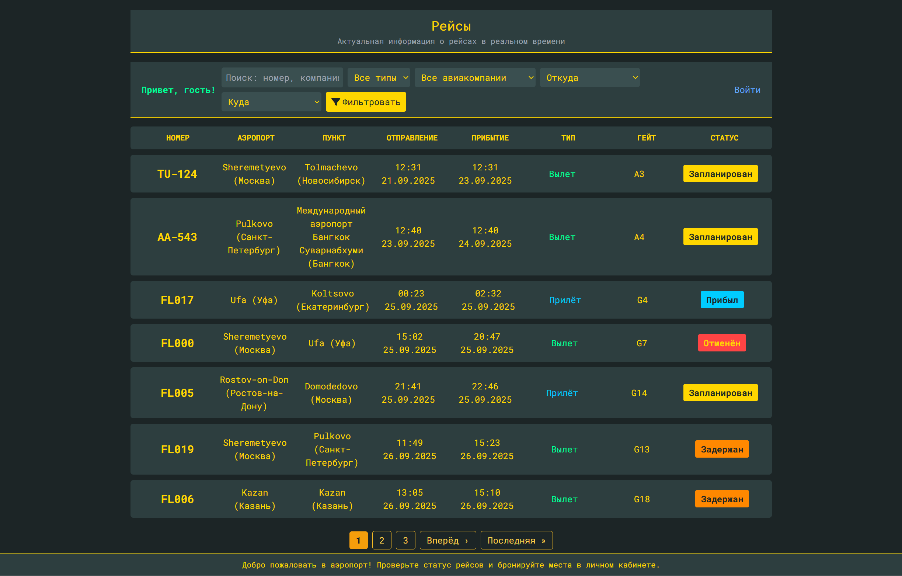
Страница с рейсом:
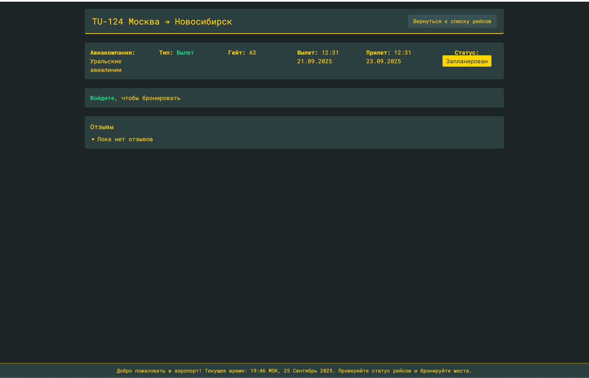
Для авторизованного пользователя:
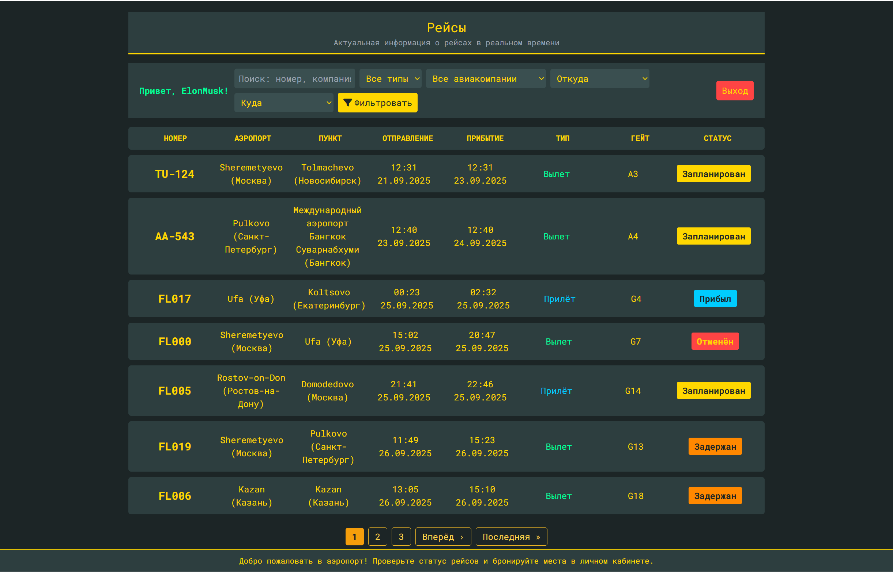
Страница с рейсом:
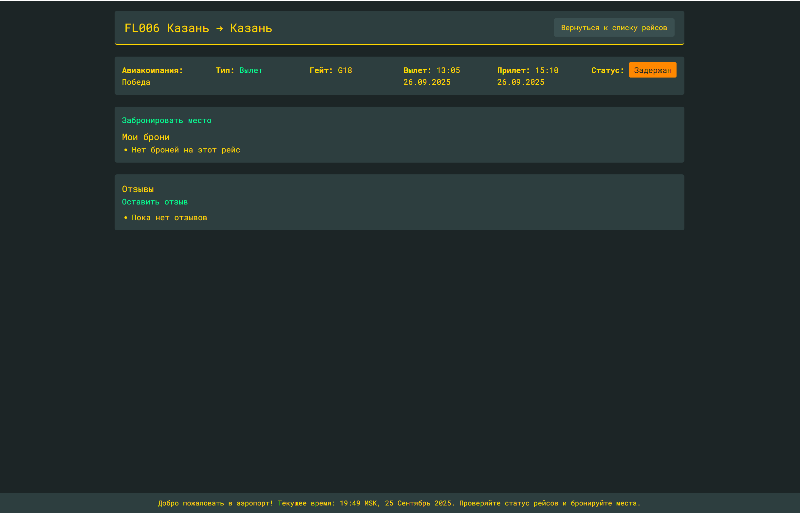
Возможность выбрать место:
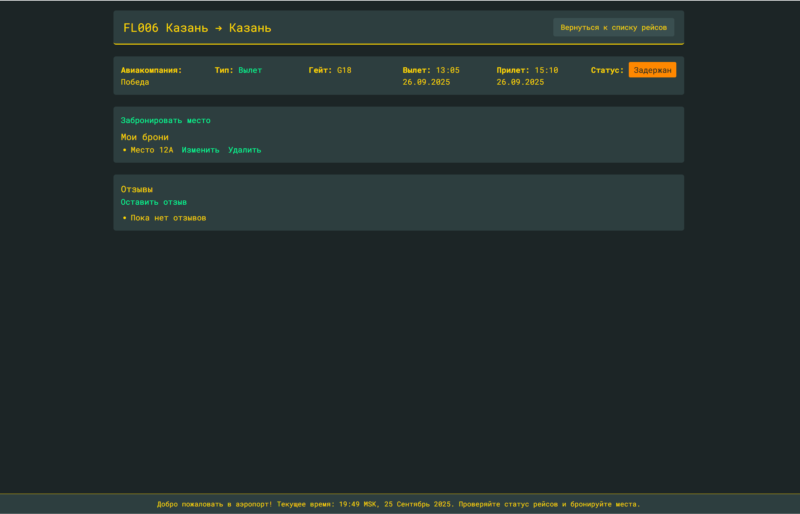
Страница регистрации:
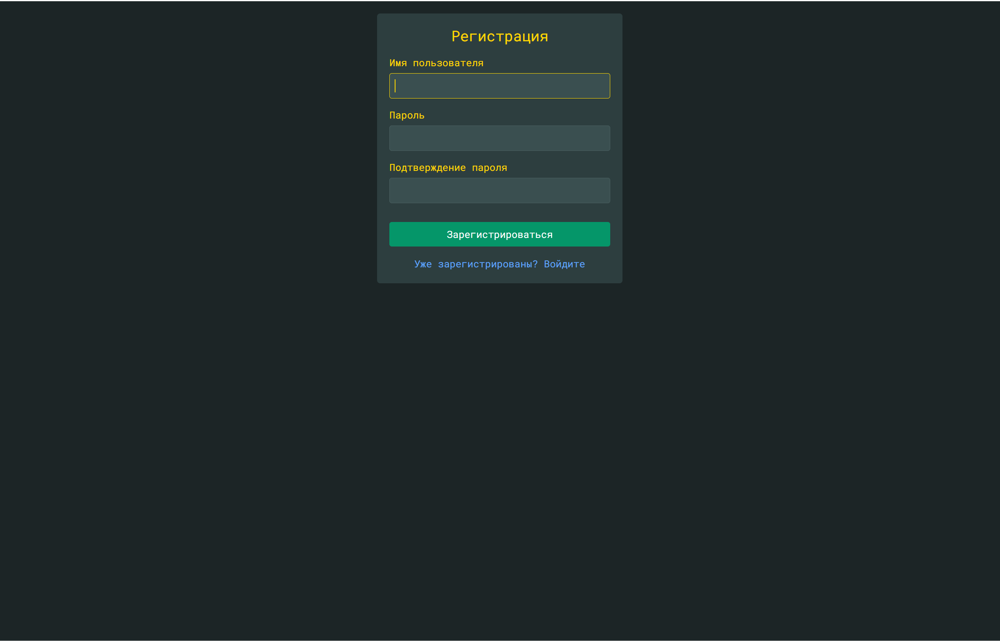
Страница авторизации:
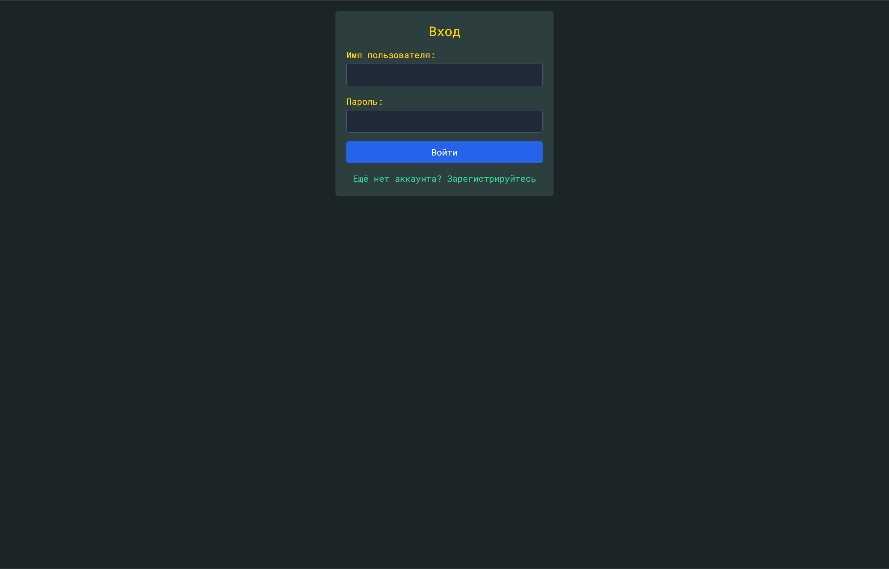
Для админа:
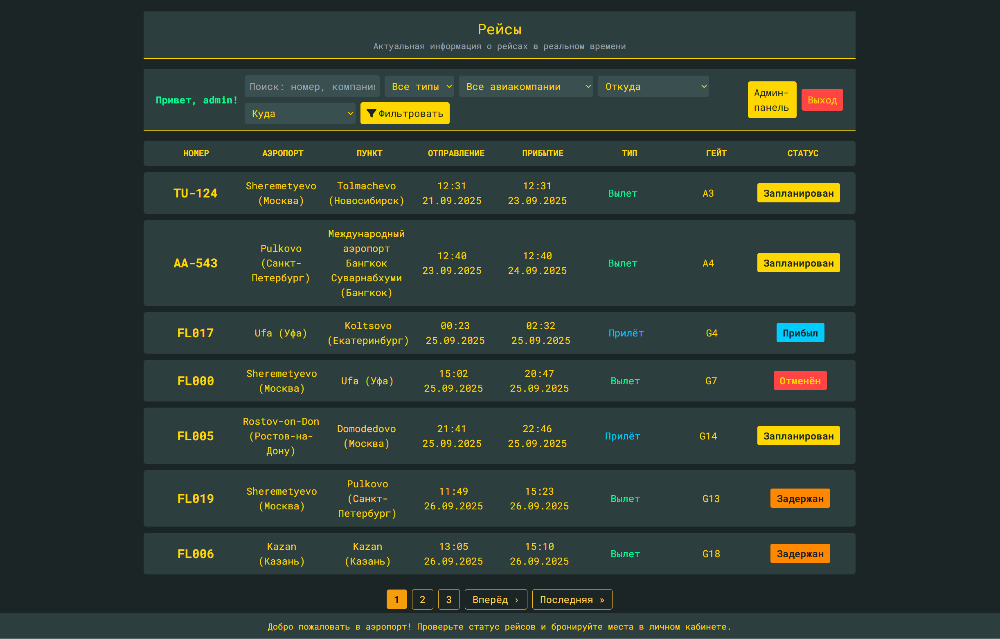
Страница с рейсом:
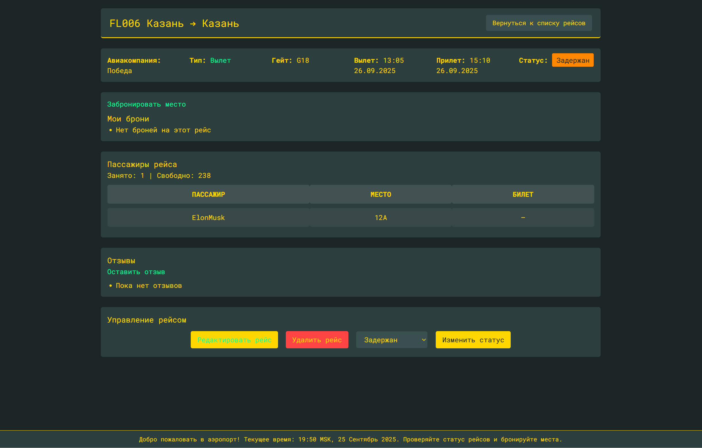
Админ может изменять данные о рейсе прямо на сайте:
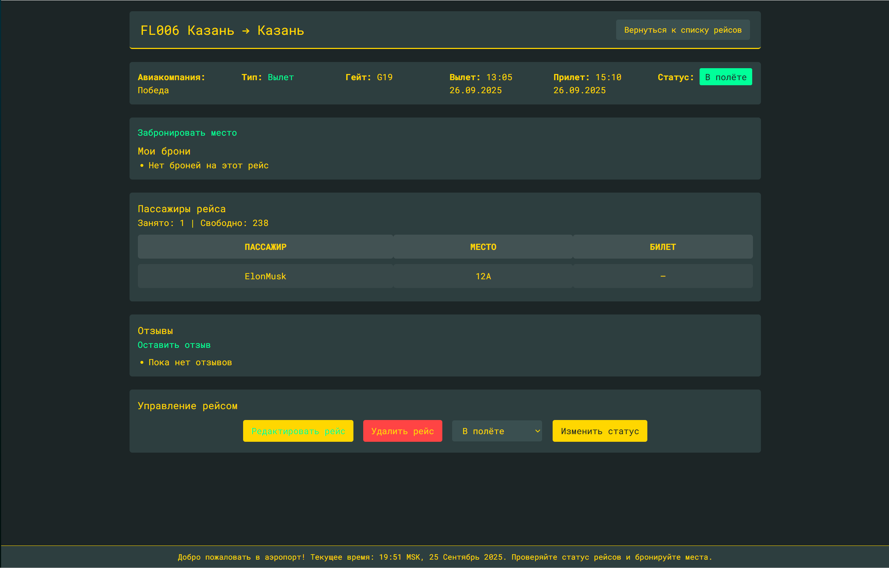
Админ-панель:
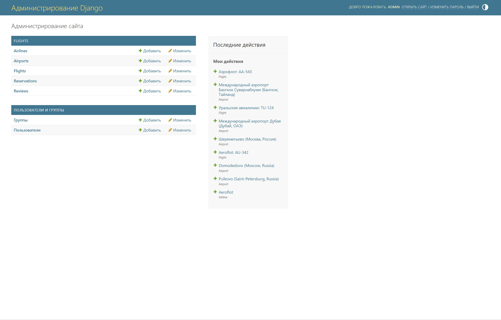